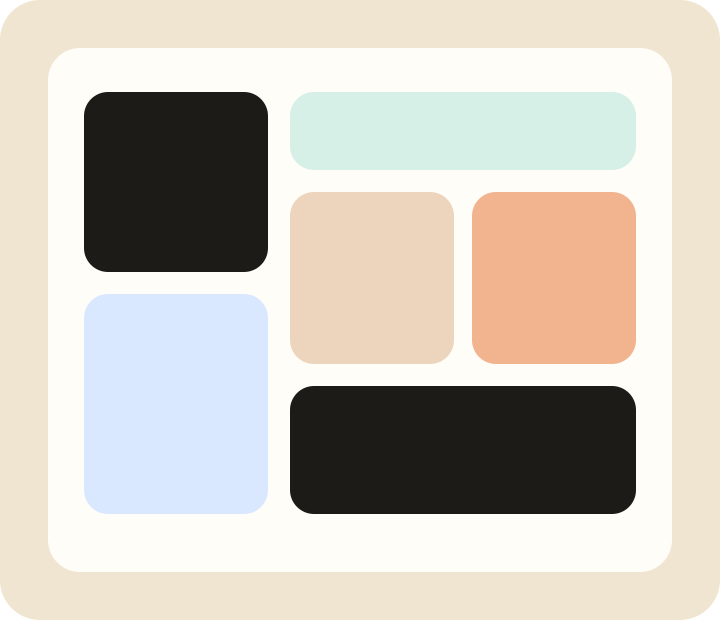

freelances qualifiés
Plateforme freelance africaine nouvelle génération
0
0
0
Les talents tech africains au cœur des projets qui comptent.
AfriTalent aide les entreprises à recruter vite et permet aux freelances de transformer leur expertise en missions durables.
entreprises partenaires
missions réalisées

Comment ça marche
Un parcours simple pour lancer des collaborations solides
Créez votre profil
Portfolio, compétences, langues et disponibilités sont mis en avant dans une fiche claire et professionnelle.
Trouvez le bon match
Les entreprises filtrent par spécialité et découvrent des profils adaptés à leurs enjeux.
Échangez en direct
Messagerie, brief, validation du scope et démarrage accéléré sur une seule plateforme.
Lancez vos missions
Suivi des livrables, paiements fluides et visibilité sur la performance des projets à chaque étape.
Catégories de services
Des expertises prêtes à intervenir sur vos priorités business
Développement Web
640 freelances disponibles
Design UI/UX
280 freelances disponibles
Marketing Digital
310 freelances disponibles
Data & IA
190 freelances disponibles
Rédaction Tech
150 freelances disponibles
DevOps & Cloud
225 freelances disponibles
Témoignages
Ils ont grandi avec AfriTalent
Blog
Ressources pour mieux collaborer avec les talents tech africains
Pourquoi l'Afrique devient un hub freelance stratégique
Analyse des dynamiques régionales, des compétences les plus demandées et des nouvelles attentes des entreprises.
Créer un brief qui attire les meilleurs profils
Une structure simple pour obtenir plus vite des propositions claires, réalistes et pertinentes.
Construire une marque freelance crédible en 2026
Portfolio, tarification, spécialisation et relation client : les signaux qui font la différence.
Passez à l'action